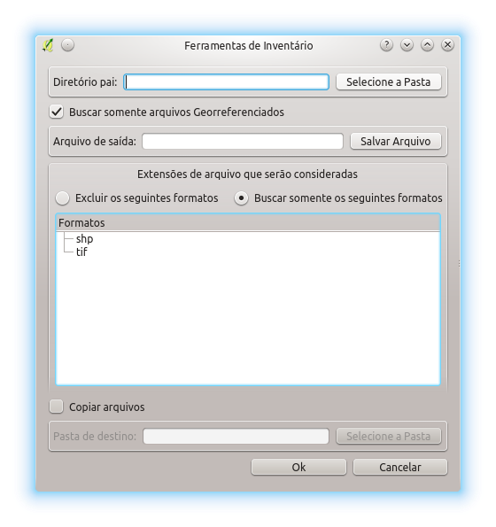
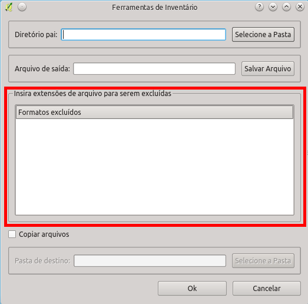
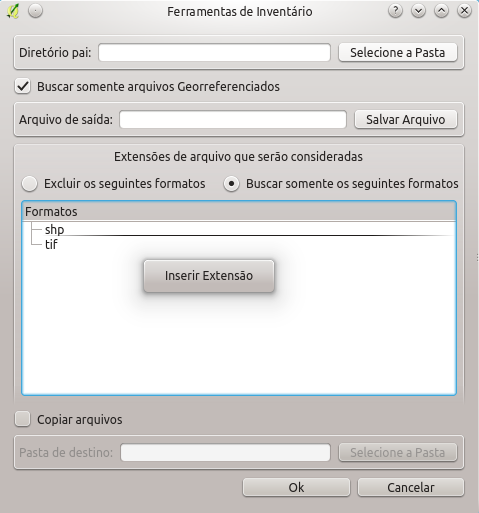
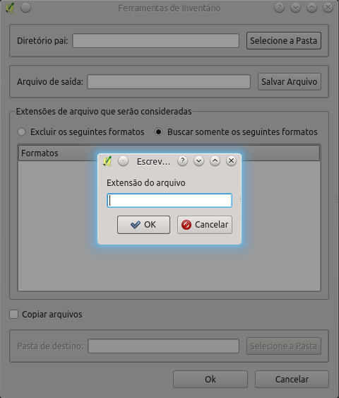
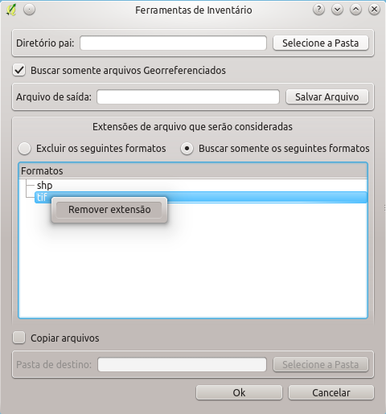
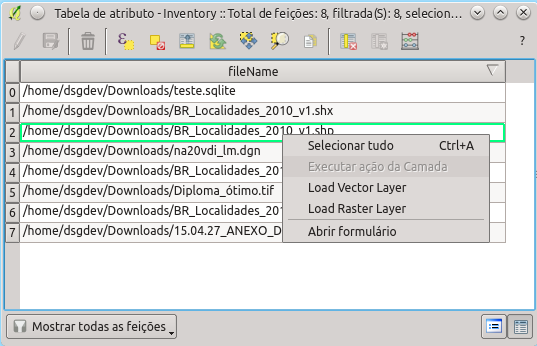

O plugin DSG Tools permite que seja feito um inventário de todas os dados geoespaciais que sejam suportados pelo GDAL/OGR. Essa ferramenta permite que o usuário escolha entre criar um arquivo CSV ou um arquivo SHP, com o caminho completo de todos os arquivos inventariados, o tamanho do arquivo, data do arquivo e extensão do mesmo. O arquivo gerado é carregado no QGIS após processamento de maneira automática.
Após o carragamento do arquivo de inventário é possível que seja feita o carregamento individual dos arquivos inventariados no QGIS atráves de duas ações de atributos do QGIS, Load vector Layer e Load Raster Layer.
Caso a opção Buscar somente arquivos georreferenciados esteja marcada, além dos dados citados acima, é fornecido o bounding box dos arquivos inventariados no SHP gerado e carregado no QGIS.

Inicialmente devem ser preenchidos os campos Diretório Pai: e Arquivo de saída:. Posteriormente o usuário deve indicar se deseja procurar somente alguns formatos ou buscar todos os formatos suportados pela GDAL/OGR excluindo-se os formatos indicados. É possível se fazer isso clicando em Excluir os seguintes formatos ou Buscar somente os seguintes formatos. Com essa indicação o usuário deve criar a lista de formatos que serão levados em consideração na pesquisa. A inserção de extensões que serão levadas em consideração é feita com o clique do botão direito do mouse no campo abaixo.

Clicando-se com o botão direito na área mostrada acima é possível inserir formatos para serem excluídos da pesquisa como se pode ver na figura abaixo.

Após clicar em Inserir Extensão uma janela permitirá que o formato desejado seja inserido na lista de formatos considerados. Isso pode ser visto na figura abaixo.

Caso o usuário deseje remover alguma extensão marcada para ser considerada é só clicar com o botão direito no formato para que o menu Remover Extensão apareça, restando ao usuário somente clicar no menu para excluir o formato.

Também é possível que os arquivos inventariados sejam copiados para uma pasta de destino. Desta forma, além de ser feito o inventário é possível que os arquivos sejam levados para uma única pasta para posterior organização. Esta possibilidade é feita com a marcação desta opção em Copiar arquivos.
Após a realização do inventário o arquivo gerado é carregado na árvore de camadas do QGIS. Ao se abrir a tabela de atributos é possível ver todos os arquivos que foram inventariados. Clicando-se com o botão direito em cima de um dos atributos (arquivo inventariado) é possível que seja feito o carregamento do mesmo ao se clicar em Load Vector Layer ou Load Raster Layer.
